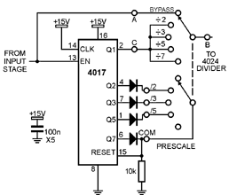
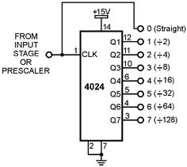
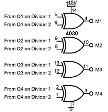
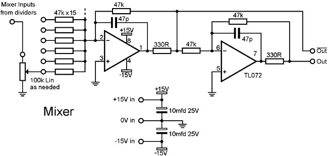
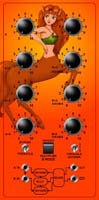

|
Sub Oscillator for music synthesizers. The previous versions can be found here.
The sub oscillator was one of the first synthesizer modules I ever built, back around 1980. The first version was designed with the ETI 4600 in mind, and was published as a circuit idea in the Australian edition of ETI. Another circuit I used at the time to "fatten up" the sound of my single oscillator synth was a "harmony generator", achieved by running a 4017 decade counter chip wired to divide by three or six. This design combines both of these circuits, giving a two channel sub oscillator, which allows each channel to be used independantly, or driven from the same oscillator, but set to different intervals. As a bonus, both channels can be multiplied or "digitally ring modulated" giving even more effects. Some ideas on how to use this module: Fed by two VCO's it can operate as two independant sub-oscillators, with optional ring modulated outputs. Running both sub-oscillators from the same VCO, tuned to a fifth over the base note you require, and with the prescaller set to divide by 3, it is possible to create harmonies. An unusual effect here is that the ring modulated outputs give a fatter chord-like sound that remains indepenant of minor or major scales, allowing "one finger chords" which can be handy when used with a related sequencer driven bass line. Careful mixing of the ring modulated output with one channel's divided output results in some interesting sounds, especially if one of the channels is being driven from a low frequency oscillator. Running like this, it could be considered to be a "harmonic sequencer" Running both inputs from the same LFO/clock signal, and feeding the mixed output into the 1V/oct input of a VCO gives you a pattern based sequencer, where the prescaler, ring modulated outputs, etc., all have a bearing on the pattern. Quite interesting patterns can be created this way. Each knob of course varies part of the overall structure, instead of a single note as per a regular step sequencer. A little on how it works: In a way, this design can be considered as a sub oscillator construction kit, as there are many ways it can be configured.
Input stage of the sub-oscillator. Two are used, one per channel.  Prescale stage of the sub-oscillator. This is used only in the "B" or second channel. 


The circuit can best be understood if viewed in smaller sections, which is why I've broken the circuit diagram up into parts. The first part simply takes the input signal (preferrably symetrical, such as a square, triangle or sine wave), squares it up, and multiplies it by two using a fairly conventional square wave frequency doubler made from a few NAND gates. Both normal and inverted signals are brought out to PCB pads, and the normal signal is fed on to the prescaler or dividers. There are two of these input stages on the PCB, one per channel. The second diagram covers the prescaler, giving effective frequency divisions of 1, 1.5, 2.5 and 3.5 when the frequency doubler in the input stage is taken into account. If a double pole switch is used as shown, it is possible to route the frequency doubled signal straight through to the divider as well. Of note is that the signal is being fed into the clock enable line, while the clock is held high. The clock enable line is simply inverted then AND gated with the signal from the clock pin within the 4017. Grounding the clock enable line and feeding the clock signal into the clock pin would have worked equally well. The third diagram is the divider, of which there are two. Dividing by two, four, eight etc. gives the various octaves. The fourth diagram simply shows how the multipliers are wired to the two dividers. The outputs are marked M1-4 and can be fed into the mixer as per the example in the mixer diagram, much like any of the signals from the dividers. These four EXOR gates do the digital "ring modulation", with each gate wired so that it is feeding from the same numbered divider stage from each channel. The fifth diagram shows the mixer. It also gives an example of how the inputs are fed through a resister then a pot and into the mixer. My prototype used thirteen pots. There is no hard and fast rule to what is fed into the mixer. That much is up to the individual's needs. In my case channel "a" was the divider chain without the prescaler, and the one with the prescaler was channel "b". From channel "a" I fed the squared input, /2, /4 and /8 signals, being the pads marked 1 to 4 on the divider into the mixer. From channel "b" I fed the frequency doubled input (see note below) the squared input, /2, /4 and /8 signals into the mixer. I also fed all four of the multipler outputs (M1-4) into the mixer.
Examples of how to wire the sub-oscillator. The exact position of the terminals on the rotary switch will vary with manufacturer. Wiring for the earlier version of the board is essentially the same, though the pads will be in different locations. Click for larger view.
Parts list This is a guide only. Parts needed will vary with individual constructor's needs. If anyone is interested in buying these boards, please check the PCBs for Sale page to see if I have any in stock. Can't find the parts? See the parts FAQ to see if I've already answered the question. Notes:
 Alternate layout Having had the prototype in my synthesiser for some time now, a second layout became obvious. Instead of having pots for both the B channel and the multiplier outputs, I used a 4 pole 2 position switch to select between the B channel and the multiplier outputs, saving me a lot of panel space. The x2 output was sacrificed, and the rotary switch to select the prescale was replaced by an SPDT switch for the bypass function, and a SPDT center off switch was used to select between divide by 3, 7 and 5. 7 is hard wired as the default on the PCB, so no connection is needed to the switch.
Article, art & design copyright 1999, 2000 by Ken Stone
| ||||||||||||||||||||||||||||||||||||||||||||||||||||||||||||||||||||||
{kind=link}
{kind=link}